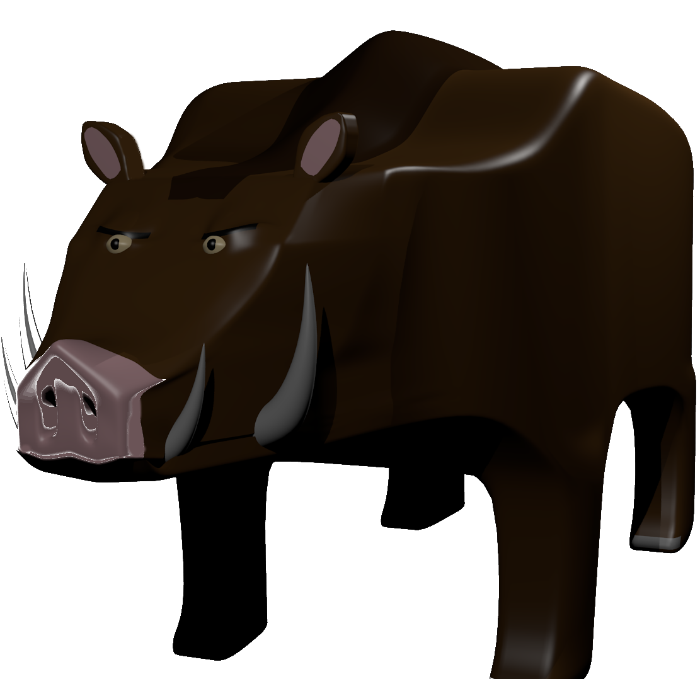
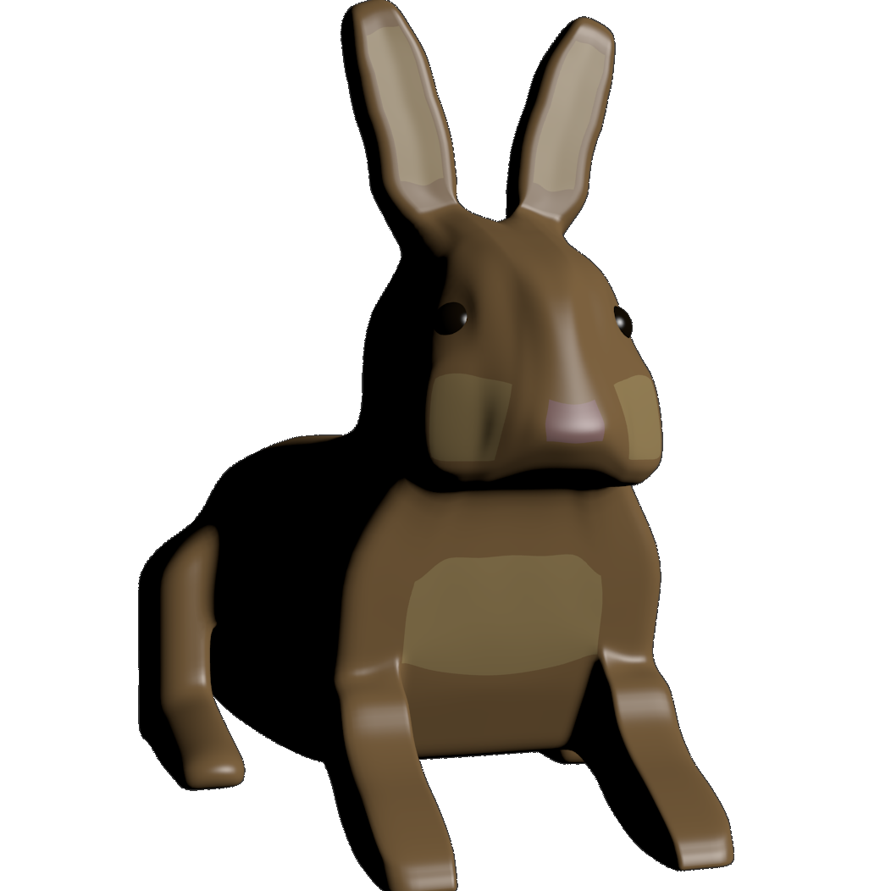

Les différents monstres que vous pourrez découvrir dans Aegina
Le sanglier

Le sanglier d'Aegina est une créature présente dans la plupart des biomes. Le seul climat qu'il évite est la chaleur de l'été d'Aegina.
Contrairement à un sanglier normal, il a plus l'apparence d'un phacochère et se montre très agressif envers les aventuriers d'Aegina. Son régime alimentaire est constitué de tout ce qu'il peut trouver allant du champignon à la chair humaine et en passant même par les minerais de mithril qu'il affectionne pour des raisons que l'on ignore.
Une particularité que les aventuriers d'Aegina ont trouvée à ces sangliers est qu'ils ont une peur des abysses telle qu'ils n'osent pas s'approcher du bord des îles et n'empruntent les ponts que lorsque leurs ennemis ne se trouvent pas en leur présence de peur que ceux-ci les poussent dans le vide.
Le pampi

Le pampi est un mystère pour tous les biologistes ayant mis les pieds dans le monde d'Aegina. Cette créature vivant dans le désert ressemble à un cactus humanoïde. Personne ne sait si les pampis sont des cactus ayant acquis la capacité de se mouvoir, des créatures prenant l'apparence de cactus pour se camoufler ou des humains ayant été transformés en cactus.
Ces trois hypothèses restent plausibles car le régime alimentaire du pampi reste inconnu et pourrait bien se limiter à un peu d'eau fraiche et de soleil comme les autres plantes. Cependant, les pampis possèdent une bouche et, même si celle-ci ne semble pas servir à manger, elle marque bien l'appartenance du pampi au règne animal.
De plus le comportement du pampi semble confirmer l'hypothèse qu'il a pris l'apparence d'un cactus pour se camoufler car il est d'une nature très peureuse et ne montre ses cotés agressifs qu'en deux occasions : quand il est acculé et n'a plus de possibilité pour s'enfuir et quand on l'appelle pampa.
Le slime
Le slime est une créature existant dans notre folklore qui a pu apparaître dans le monde d'Aegina grâce à l'instabilité de celui-ci. Le slime est une créature inorganique pouvant dissoudre la plupart des minerais ainsi que la matière organique.
Le slime n'est pas un animal muté contrairement aux autres créatures d'Aegina. Tandis que les minerais se transforment en d'autres minerais et que les animaux mutent en d'autres créature à cause de l'instabilité d'Aegina, le slime est le résultat de la transformation de l'eau sous l'influence de l'instabilité d'Aegina. C'est aussi pour cette raison que le seul moyen de trouver de l'eau dans Aegina est de la récupérer dans les cactus qui protègent leur intérieur de l'instabilité d'Aegina.
Le pinguin

Il existe dans le monde d'Aegina, plus précisément dans l'hiver d'Aegina, des pingouins semblables à ceux que l'on connaît. Cependant cette ressemblance n'est que physique.
Les pingouins d'Aegina sont dotés d'une très grande intelligence, d'une forte curiosité et d'une vision assez pessimiste du monde. Cela se remarque dans leur comportement. Les pingouins s'intéressent beaucoup aux humains les trouvant étrange et vont a sa rencontre pour tenter de comprendre ce qu'il est.Une fois attaqués le pingouin se résigne extrêmement rapidement, se disant qu'il va de toute façon finir par mourir un jour et se laisse ainsi dévorer. Leur intelligence leur permet de facilement deviner les mauvaises intentions des humains et d'éviter leurs pièges.
Le lapin

Le Lapin est un animal que vous devez déjà connaître. Celui d'Aegina n'est pas bien différent de celui existant dans notre monde. Deux races de lapin cohabitent dans Aegina, l'une blanche et l'autre marron. Les lapins marron se trouvent dans le printemps et l'automne d'Aegina tandis que les lapins blancs se trouvent dans l'hiver d'Aegina.
Les lapins sont des créatures très rapides et fuyardes ce qui peut embêter les aventuriers d'Aegina tentant de les chasser mais ils se font attraper assez facilement par des pièges. Leur chair aurait un goût de poulet.